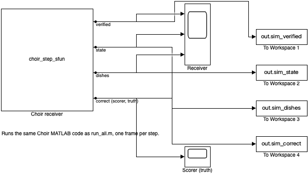
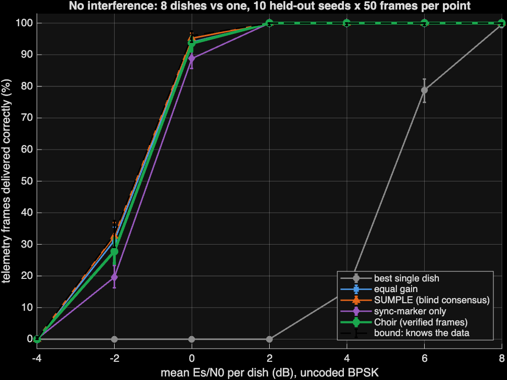
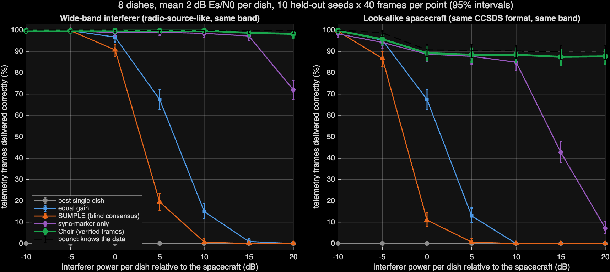
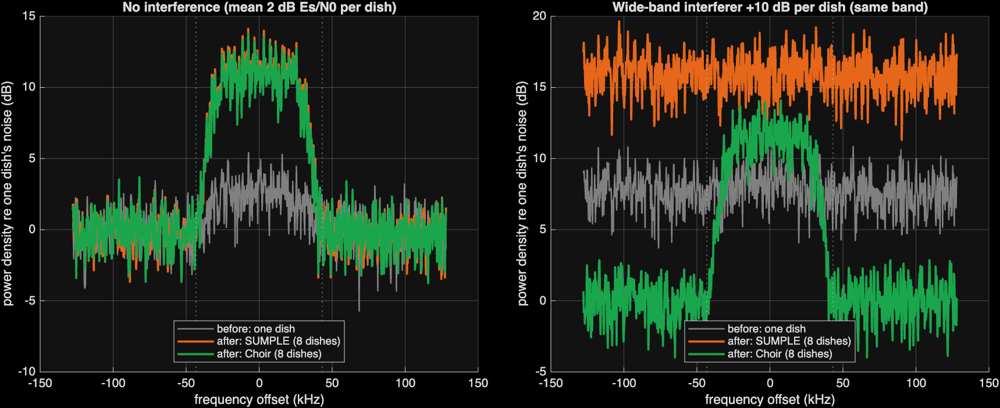
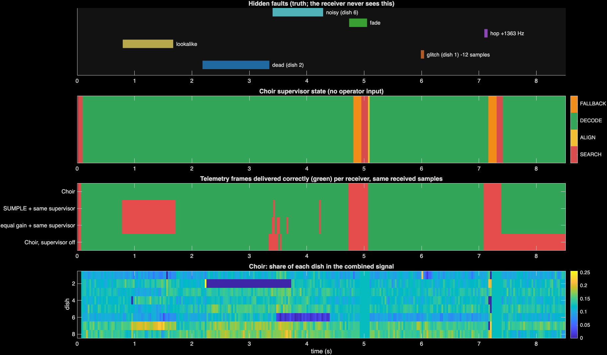
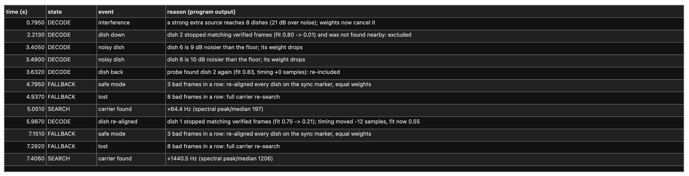
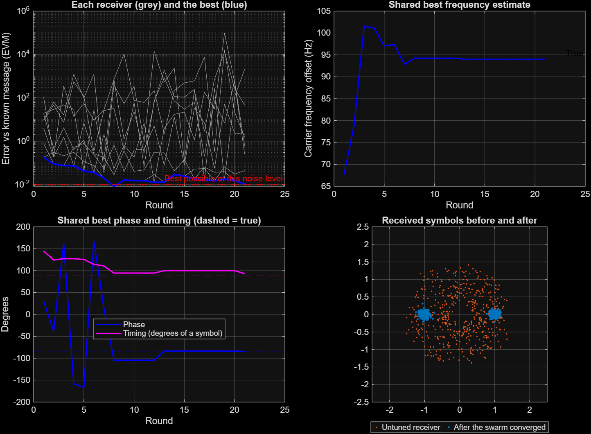

The same receiver code runs in Simulink, one frame per step, and delivered 275 of 300 frames, the same as in MATLAB


Choir is an autonomous MATLAB receiver for 8 simulated dishes. It calculates the dish weights only from frames that pass three checks. The telemetry is real NASA Curiosity (MSL) data; the radio link is simulated. With the same samples, JPL's SUMPLE method delivered 0%.
MATLAB in Space Hackathon, Track 1: Deep-Space Communication & Signal Intelligence. Northeastern University, 3 October 2026
| Part | Content | Evidence |
|---|---|---|
| Track 1 task | Find, clean, and decode weak radio signals with no human tuning | Required: filter, acquire or re-acquire, decoded telemetry, before/after spectra |
| Software: ChoirMATLAB R2026b | Real NASA Curiosity (MSL) telemetry in CCSDS frames goes to 8 simulated dishes with hidden faults. The dish weights come only from frames with a correct CRC, the correct spacecraft ID, and the next frame countThe telemetry is real. The radio link is simulated. No benchmark radio clips are used | Measured results on slides 3 to 9 |
| Hardware: Choir on a breadboardRaspberry Pi Pico | 3 LEDs send the same Morse frame (sync, ID C, counter, MATLAB, checksum) in sequence to one photoresistor. In each round, a hidden fault adds flicker to one LED, changes its payload, or sends a look-alike frame on 2 of 3 LEDs | Live: raw and filtered light signal, majority vote and Choir checks, decoded message in the terminal |
| Choir swarmadd-on | Several receivers find the carrier frequency, phase, timing, and gain together (particle swarm). They use a known training message | Slide 12 |

| State | Function | Next state |
|---|---|---|
| SEARCH | Squares the BPSK signal to show the carrier as a tone. Adds the spectra of all 8 dishes | ALIGN, when a spectral peak is 12 times the median |
| ALIGN | Finds the sync marker in one frame period on each dish. This gives the frame timing and the delay of each dishRejects frames with a different spacecraft ID | DECODE, when a frame passes the three checks |
| DECODE | Uses the weights w = Q−1h. h comes only from frames with a correct CRC, spacecraft ID 42, and the next frame count. Q is the rest of the received signalA dish that does not match the verified frames is re-timed or removed | FALLBACK, after 3 bad frames in sequence |
| FALLBACK | Re-times each dish on the sync marker. Uses equal weights | DECODE, when a frame passes the checks. SEARCH, after 8 bad frames in sequence |




Hidden faults (truth, not given to the receiver): look-alike from 0.79 s, dish 2 fails from 2.19 s, dish 6 noise × 10 from 3.41 s, fade on all dishes from 4.74 s, clock error on dish 1 at 5.99 s, carrier hop of +1363 Hz at 7.09 s. Each fault has a log entry within 2 frames.

| Hidden fault (one per round) | Signal at the photoresistor | Majority voteuses the most common frame | Choiraccepts only verified frames |
|---|---|---|---|
| Flicker on one LED | One copy has errors from flicker | The 2 correct copies agree: correct | The copy with errors fails the checksum; a correct copy is logged |
| Changed payload | One copy has incorrect letters and the old checksum | The 2 correct copies agree: correct | That copy fails the checksum; a correct copy is logged |
| Look-alike on 2 of 3 LEDs | Two copies with ID Q, payload DECOY, and a correct checksum | DECOY wins 2 to 1: incorrect | Both copies are rejected (ID Q, not C); the correct copy is logged |
| Limitation | Measured effect | Next step |
|---|---|---|
| Look-alike with a similar arrival pattern | Seed 304, similarity 0.81 (other seeds 0.16–0.58): all receivers failed, including the bound that uses the transmitted bits | Separate the signals by frequency or code, not by dish weights |
| Weak signal without interference | Choir 27.8%, SUMPLE 32.6% at −2 dB per dish | None: the advantage of Choir is resistance to interference and faults |
| Simulated radio link | The telemetry is real NASA MSL data; dishes, noise, and faults are simulated | Recordings from several real stations |
| Uncoded BPSK | One dish needs approximately 8 dB; LDPC or turbo codes need several dB less | Add coding; the receiver logic stays the same |
